Patient Profile
Patient Profile is the main screen to View/Edit/Add
patient profile information. Patient information on the screen is
organized into two main sections. First section gives patient
demographics like contact info (DOB, address, phone etc.) and other
personal information like Insurance, Doctor, Diagnoses and HIPAA Notice etc. The
second section gives details of patient’s transactions and/or interactions with
CSR or Clinic. These details are organized into various TABS which consist
of Prescriptions, Rx History, Allergies, Notes, Insurance, Call Logs, Shipping
Logs and Documents.
-
Click on this image to Add new patient
-
Click on this image to edit a selected patient
-
Click this image to search for entered Patient Name
-
Click this image to schedule an appointment for the selected patient
Tasks associated with
the Patient Profile screen
Add New Patient
From the Patient Profile screen, Click
on to
add new patient details. A new screen is shown up to enter patient
details (Name, Address, Phone, Doctor, etc.). MRN field is used to
specify account reference no of Clinic’s EMR system or Prodigy system.
After entering all the required information Click Save button to save information
and takes you back to Patient Profile screen.
Edit Patient Info.
In order to edit patient details,
first you select a patient by entering first few letter of patient’s last name
in the search Patient field. As you type first few letters, system brings
you a short list of matching records and can select a particular patient to
view or edit. To edit patient demographics click on next
to Patient name
Schedule an
Appointment
After selecting a
Patient, click on to
schedule an appointment for a patient. Scheduling an appointment involves
selecting a date and time for appointment, the reason for appointment, and
notes/comments associated with the appointment. If there are any other
appointments scheduled for the selected date, they will be displayed in the
bottom half of the screen
Patient Transactions
Patient prescription
and other transaction information organized into various TABs as shown
below.
|
|
Click
on the Tab to view respective details. Details are shown in a grid
format as shown below.
Enter New
Prescriptions
New prescriptions can
be entered using Prescriptions tab by selecting Add Prescription
link. Need to select the doctor, Drug Name, SIG Code, Quantity, No. of
Refills allowed, Rx Type (Sample, Regular, and PAP), etc.
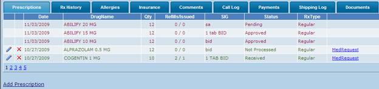
To edit any
particular transaction information, click on icon and to delete, click on X icon. To
generate a new Med Request against any previous prescription, click on
MedRequest link. Rows in Red Color are Med
Requests, Prescriptions displayed in Green Color
indicates the selected Pharmacy is ADiO and Blue Color
indicates request from Other Pharmacy.
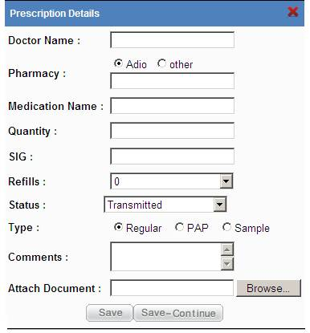
System displays the
list of available doctors of the Clinic with respect to the Patient Clinic. Select
Adio for the Adio related Pharmacies otherwise select “others”. When “Other” is
selected Pharmacy Name will be automatically filled with Other Pharmacy and
Type will be set to Regular and radio buttons for the PAP and Sample will be
disabled. Attach any scanned document (eg. Patient Rx) in a valid image format.
(Supported formats include .gif, .tif, .png, .jpg, or .jpeg) Click on Save to
add Prescription and Click on Save-Continue to add another prescription.
Rx History
Rx History tab
displays medication details pulled from the Pervasive Data and Rx30 Data (From
Paducah and ETown). This provides the complete Prescription history of the
patient. RxDate is the Prescription
date, Medicine is the medication suggested, and direction indicates how to use
the medicine. Doctor is the person who has suggested the medication. The Blue Color rows indicate Refills and Green Color rows indicate Rx.
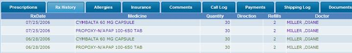
Click on the “Add
medication” link allows the user no add new medication for the patient. Pop up
window will be opened with title Medication Details. To close this without
adding click on the “X” image to close else Provide the information in the
below form and click on save to add new medication. Medication Name, Direction
and Doctor have the auto-fill capability; selection from the list can be done.
All inputs are mandatory in this form.
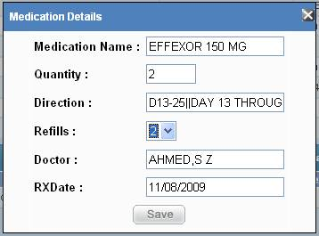
Enter/View Patient
Drug Allergies
Enter Allergy
information associated with a patient regards to any medication that (s) he is
allergic to. This is for information purpose only.
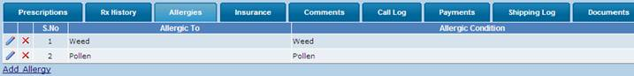
To edit any
particular allergy information, click on and to delete, click on X. Information provides
indicates the patient is allergic to and the description. To add a new allergy
click on the “Add Allergy” link.
Enter /View Patient
Insurance information
Insurance TAB will
enable to enter Patient Insurance information. The information includes
Insurance Company Name, Policy details, etc.
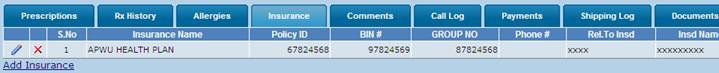
To add a New
Insurance click on the “Add Insurance” link. A Popup window will be opened,
provide the required details and click on save else close the window.
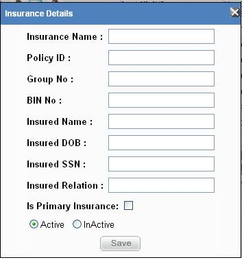
Provide the Insurance
Name and the details. There is a checkbox provided at the bottom of the window,
check this to make this insurance as the Primary Insurance and provide the
Information whether the Insurance is Active or Inactive and Click on save to
enter the details.
Enter Notes
Notes TAB will allow you to
enter any notes associated with Patient Profile. This can be any
information that can be shared with other people to view Patient Profile.
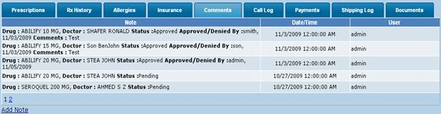
The information Note
provided here describes the previous Medrequest status and approved by
information and date. Any informational note can be provided here.
Enter Patient Call
Log
Call Log TAB will
facilitate the CSR to capture any issues that Patient may have and like to
discuss with Doctor or Pharmacist. This will enable Doctor to follow up
with his/her response.
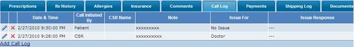
To edit any
particular transaction information, click on and
to delete, click on X.
Call Log information display the Date and time of the call, who has initiated
and the Customer Service Representative name, reason/notes if any, and Issue is
for either doctor or pharmacist etc. The last column provides the response for
the issue.
To add a
new Call Log click on the “Add Call Log” link, system popup a window to enter
new call log information.
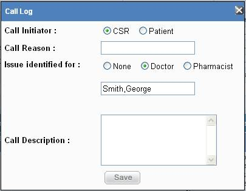
Select CSR if the
call is initiated by the Customer Service Representative or if the Patient
himself initiated the call then select Patient. Provide the reason for calling.
If the Issue is for the Doctor select Doctor and the textbox below will
automatically insert the Patient’s doctor name. Select Pharmacist if the issue
is for Pharmacist or else select none. Add description and click on Save to
enter call log details into the system.
Enter/Edit Payments
Payments TAB enables
to capture any payments made at Clinic facility during the CSR’s encounter with
Patient.
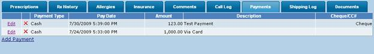
Click on “Add
Payment” to add new payment information. Provide the payment details like type
of payment and payment amount etc. If the payment type is Cheque then provide
the ChequeNo, If the Payment is via Credit Card then Provide the Payment
Authorization information and click on Save.
Track Shipping Log
Information
Shipping Logs helps
to keep track of all Drug Delivery information. Once it is integrated
with Stamps.com or other mailing software that will enable to track shipment
tracking on almost a real-time basis.
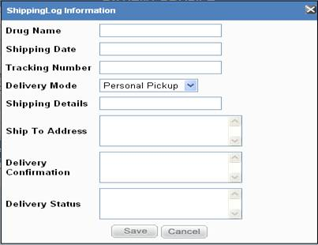
Documents Information
This maintains the
patients documents as a repository to track important records related to the
Patient. To add new Document click on the “Add Document” link below. Provide the document name and its
description, to provide the document path click on the Browse Button
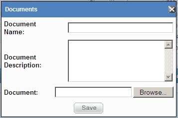